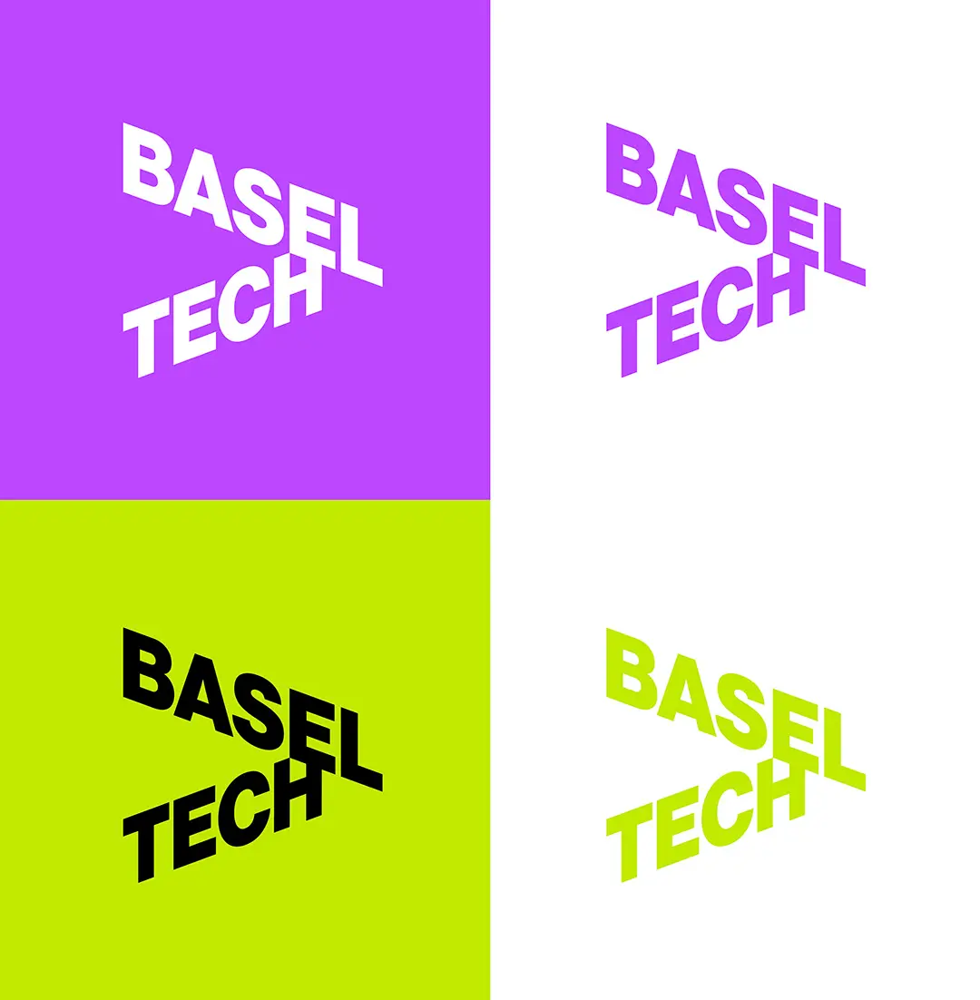
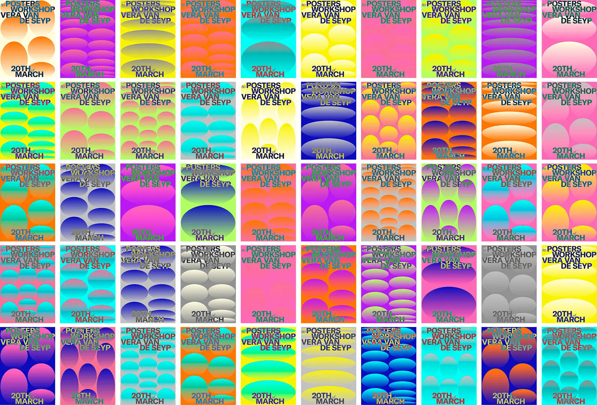
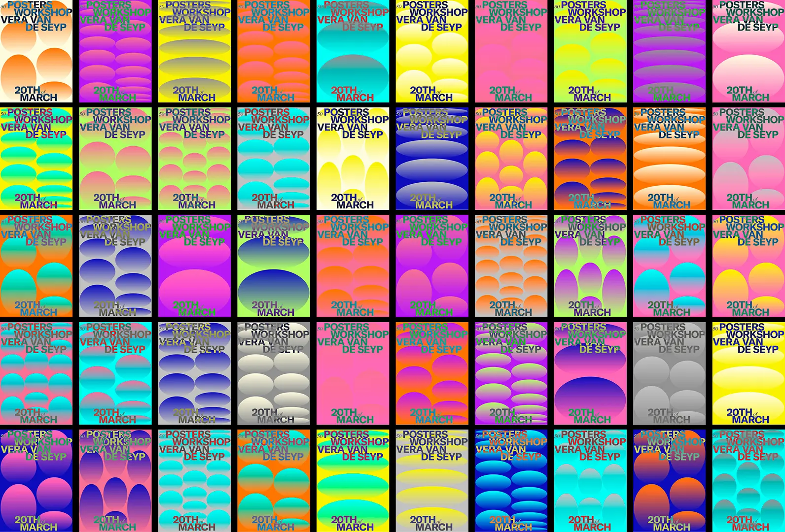

This collection brings together a series of smaller projects that reflect different approaches and interests within my practice.
Title
Cut-Out
Year
2024
Duration
2 weeks
Mentoring
Jinsu Ahn
Team
Taylor Kovacevic
“ Cut-Out ” explores immersive typography through spatial projection, inviting visitors to move through and engage with the installation.
This is an unrealised draft for the new BaselTech corporate design, conceived for a platform aimed at increasing the visibility and connectivity of the region’s tech ecosystem.

A one-day workshop with Vera van de Seyp focused on developing a poster generator as an exploration of generative design through variation.


“ Mahlzeit ! ” explores dining sounds through onomatopoeia, using animated typography to make each sound visually tangible.
Title
Mahlzeit !
Year
2025
Duration
2 weeks
Mentoring
Simone Hörler